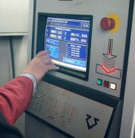
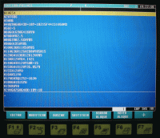

El operario escribe el programa CNC a pie de máquina. Según el fabricante del control la simulación de la pieza y corrección de la sintaxis de programación se pueden realiza al mismo tiempo. También en algunos controles se puede introducir un programa CNC al mismo tiempo que otro programa está en ejecución.
El programa también puede escribirse en un ordenador para después mediante un software llamado DNC transmitirlo a la unidad CNC. En este caso el programador no dispone de las ayudas de la unidad de control numérico.
La programación a pie de máquina se denomina de códigos ISO y su aprendizaje es objeto del presente manual.
{kind=link}
La mayoría de los controles antes de añadir una linea al programa o cuando se modifica comprueban la sintaxis del código escrito. Si es incorrecto la pantalla muestra un mensaje de error. Esto no se produce cuando se escribe el programa en un ordenador y se envía a través del DNC.
En la figura se muestra la pantalla de edición de un programa de fresadora CNC en un control Fagor 8055. Vemos que debajo de la pantalla aparece una teclas, estas se corresponden con los rectángulos de la parte inferior de la pantalla, se denominan Softkey y dan diferentes funciones de ayuda a la edición.
{kind=link}